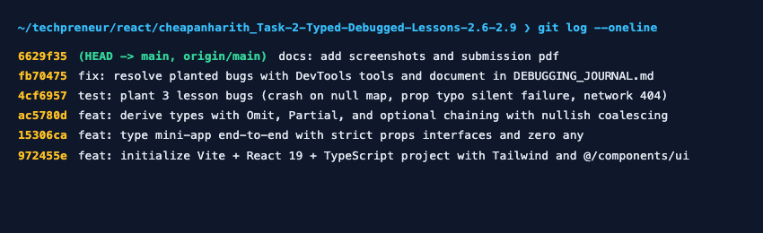

.map() crashed the page, React DevTools to find the inStock prop typo that silently broke the badges with zero console errors, and the Network tab to spot the 404 URL typo that the console alone couldn't explain.
Symptom: Blank screen crash when rendering products.
Tool: Chrome Sources Breakpoint.
Showed: Paused on .map(); Scope pane showed products was null.
Fix: Initialized to [] and added (products ?? []).map(...).
Symptom: Cards always said "Sold Out", console had 0 errors.
Tool: React DevTools (Components).
Showed: Prop passed as isAvailable instead of inStock (was undefined).
Fix: Passed inStock={product.inStock} to match props interface.
Symptom: Sync API failed with red error alert.
Tool: Chrome Network Tab (Fetch/XHR).
Showed: Red 404 on /productss due to extra 's'. Response: resource not found.
Fix: Corrected endpoint to /products and added response.ok check.
